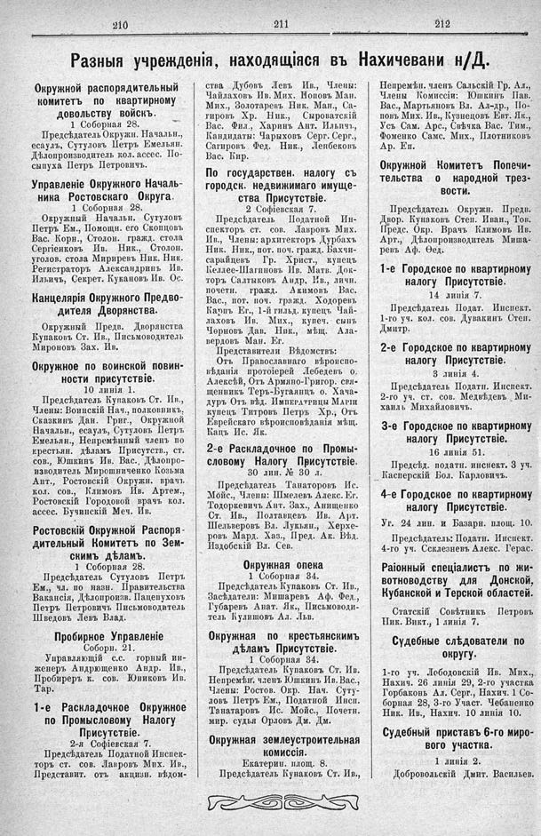

Лист источника 576
Скан

Распознанный текст
210
211
212
Разныя учрежденія, находящіяся въ Нахичевани н/Д.
Окружной распорядительный
комитетъ по квартирному
довольству войскъ.
1 Соборная 28.
Предсѣдатель Окружн. Начальн.,
есаулъ, Сутуловъ Петръ Емельян.
Дѣлопроизводитель кол. ассес. По-
сыпуха Петръ Петровичъ.
Управленіе Окружного Началь-
ника Ростовскаго Округа.
1 Соборная 28.
Окружный Начальн. Сутуловъ
Петръ Ем., Помощн. его Скопцовъ
Вас. Корн., Столон. гражд. стола
Сергіенковъ Ив. Ник., Столон.
уголов. стола Мириревъ Ник. Ник.
Регистраторъ Александринъ Ив.
Ильичъ, Секрет. Кукановъ Ив. Ос.
Канцелярія Окружного Предво-
дителя Дворянства.
Окружный Предв. Дворянства
Купаковъ Ст. Ив., Письмоводитель
Мироновъ Зах. Ив.
Окружное по воинской повин-
ности присутствіе.
10 линія 1.
Предсѣдатель Купаковъ Ст. Ив.,
Члены: Воинскій Нач., полковникъ,
Сказкинъ Дан. Григ., Окружной
Начальн., есаулъ, Сутуловъ Петръ
Емельян., Непремѣнный членъ по
крестьян. дѣламъ Присутств., ст.
сов., Юшкинъ Ив. Вас., Дѣлопро-
изводитель Мирошниченко Козьма
Ант., Ростовскій Окружн. врачъ
кол. сов., Климовъ Ив. Артем.,
Ростовскій Городовой врачъ кол.
ассес. Бучинскій Меч. Ив.
Ростовскій Окружной Распоря-
дительный Комитетъ по Зем-
скимъ дѣламъ.
1 Соборная 28.
Предсѣдатель Сутуловъ Петръ
Ем., чл. по назн. Правительства
Вакансія, Дѣлопроизв. Пацепуховъ
Петръ Петровичъ Письмоводитель
Шведовъ Левъ Влад.
Пробирное Управленіе
Соборн. 21.
Управляющій с.с. горный ин-
женеръ Андрющенко Андр. Ив.,
Пробиреръ к. сов. Юниковъ Ив.
Тар.
1-е Раскладочное Окружное
по Промысловому Налогу
Присутствіе.
2-я Софіевская 7.
Предсѣдатель Податной Инспек-
торъ ст. сов. Лавровъ Мих. Ив.,
Представит. отъ акцизн. вѣдом-
ства Дубовъ Левъ Ив., Члены:
Чайлаховъ Ив. Мих. Поповъ Ман.
Мих., Золотаревъ Ник. Ман., Са-
гировъ Хр. Ник., Сыроватскій
Вас. Фил., Харинъ Ант. Ильичъ,
Кандидаты: Чарыховъ Серг. Серг.,
Сагировъ Фед. Ник., Лепбековъ
Вас. Кир.
По государствен. налогу съ
городск. недвижимаго имуще-
ства Присутствіе.
2 Софіевская 7.
Предсѣдатель Податной Ин-
спекторъ ст. сов. Лавровъ Мих.
Ив., Члены: архитекторъ Дурбахъ
Ник. Ник., пот. поч. гражд. Бахчи-
сарайцевъ Гр. Христ., купецъ
Келлес-Шагиновъ Ив. Матв. Док-
торъ Салтыковъ Андр, Ив., личн.
почетн. гражд. Акимовъ Вас.
Вас., пот. поч. гражд. Ходоревъ
Карпъ Ег., 1-й гильд. купецъ Чай-
лаховъ Ив. Мих., купеч. сынъ
Черновъ Дав. Ник., мѣщ. Ала-
вердовъ Ман. Ег.
Представители Вѣдомствъ:
Отъ Православнаго вѣроиспо-
вѣданія протоіерей Лебедевъ о.
Алексѣй, Отъ Армяно-Григор. свя-
щенникъ Теръ-Бугаянцъ о. Хача-
дуръ Отъ вѣд. Императрицы Маріи
купецъ Титровъ Петръ Хр., Отъ
Еврейскаго вѣроисповѣданія мѣщ.
Кацъ Ис. Як.
2-е Раскладочное по Промы-
словому Налогу Присутствіе.
30 лин. № 30 л.
Предсѣдатель Тапаторовъ Ис.
Мойс., Члены: Шмелевъ Алекс. Ег.
Тодоркевичъ Ант. Зах., Анищенко
Ст. Ив., Полтавцевъ Ив. Арт.
Шельверовъ Вл. Лукьян., Херхе-
ровъ Мард. Хаз., Пред. Ак. Вѣд.
Издобскій Вл. Сев.
Окружная опека
1 Соборная 34.
Предсѣдатель Купаковъ Ст. Ив.,
Засѣдатели: Мишаревъ Аф. Фед.,
Губаревъ Анат. Як., Письмоводи-
тель Кулишовъ Ал. Льв.
Окружная по крестьянскимъ
дѣламъ Присутствіе.
1 Соборная 34.
Предсѣдатель Купаковъ Ст. Ив.
Непремѣн. членъ Юшкинъ Ив. Вас.,
Члены: Ростов. Окр. Нач. Суту-
ловъ Петръ Ем., Податной Инсп.
Танатаровъ Ис. Мойс., Почетн.
мир. судья Орловъ Дм. Дм.
Окружная землеустроительная
комиссія.
Екатерин. площ. 8.
Предсѣдатель Кунаковъ Ст. Ив.,
Непремѣн. членъ Сальскій Гр. Ал.,
Члены Комиссіи: Юшкинъ Пав.
Вас., Мартьяновъ Вл. Ал-др., По-
повъ Мих. Ив., Кузнецовъ Евт. Як.,
Усъ Сам. Арс., Свѣчка Вас. Тим.,
Фоменко Самс. Мих., Плотниковъ
Ар. Еп.
Окружной Комитетъ Попечи-
тельства о народной трез-
вости.
Предсѣдатель Окружн. Предв.
Двор. Кунаковъ Степ. Иван., Тов.
Предс. Окр. Врачъ Климовъ Ив.
Арт., Дѣлопроизводитель Миша-
ревъ Аф. Ѳед.
1-е Городское по квартирному
налогу Присутствіе.
14 линія 7.
Предсѣдатель Подат. Инспект.
1-го уч. кол. сов. Дувакинъ Степ.
Дмитр.
2-е Городское по квартирному
налогу Присутствіе.
3 линія 4.
Предсѣдатель Податн. Инспект.
2-го уч. ст. сов. Медвѣдевъ Ми-
хаилъ Михайловичъ.
3-е Городское по квартирному
налогу Присутствіе.
16 линія 51.
Предсѣд. податн. инспект. 3 уч.
Касперскій Бол. Карловичъ.
4-е Городское по квартирному
налогу Присутствіе.
Уг. 24 лин. и Базарн. площ. 10.
Предсѣдатель: Податн. Инспект.
4-го уч. Склезневъ Алекс. Герас.
Раіонный спеціалистъ по жи-
вотноводству для Донской,
Кубанской и Терской областей.
Статскій Совѣтникъ Петровъ
Ник. Викт., 1 линія 7.
Судебные слѣдователи по
округу.
1-го уч. Лебодовскій Ив. Мих.,
Нахич. 26 линія 29, 2-го участка
Горбаконь Ал. Серг., Нахич. 1 Со-
борная 28, 3-го Участ. Чебаненко
Ник. Ив., Нахич. 10 линія 10.
Судебный приставъ 6-го миро-
вого участка.
1 линія 2.
Добровольскій Дмит. Васильев.